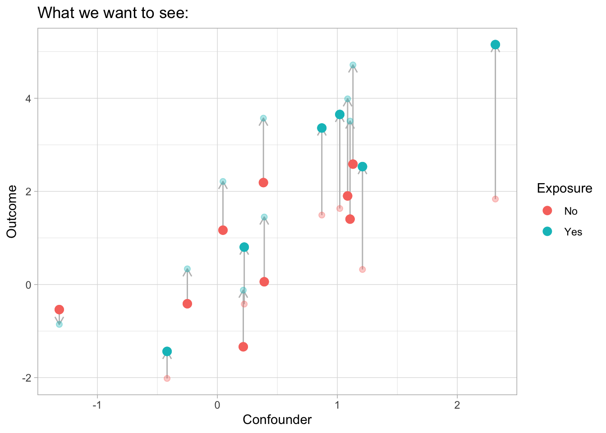
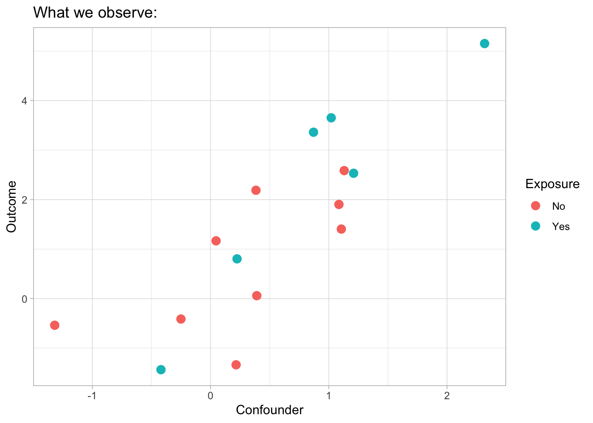

12 March 2025
1. Data generative model of potential outcomes
1.1 Single binary exposure case
Suppose the residuals \(\epsilon_i\) are independent and randomly drawn from distribution \(\mathcal{P}\), and \(\mathbb{E}[\epsilon] = 0\).
The potential outcome of unit \(i\) can maybe represented by
\[ Y_i(x_i, u_i) = f(x_i, u_i) + \epsilon_i, \ \epsilon_i \sim \mathcal{P}, \mathbb{E}[\epsilon] = 0, \]
where \(f(x_i, u_i)\) is a function of both treatment \(x_i\) and the confounder \(u_i\).
The expectation of potential outcomes are:
\[ \theta^{(0)} := \mathbb{E}[Y(0)] = \mathbb{E}_U \left[ f(0, u) \right], \\ \theta^{(1)} := \mathbb{E}[Y(1)] = \mathbb{E}_U \left[ f(1, u) \right]. \]
Here, let \(\theta^{(x)} := \mathbb{E}[Y(x)], \, x = 0,1\).
According to the consistency assumption (i.e., SUTVA), the observed outcome \(Y_i\) is either \(Y_i(0)\) or \(Y_i(1)\):
\[ Y_i := Y_i(1, u_i) X_i + Y_i(0, u_i) (1 - X_i) = Y_i(1, u_i) \cdot \mathbb{I}[X_i = 1] + Y_i(0, u_i) \cdot \mathbb{I}[X_i = 0]. \]
The confounder \(U\) affects the treatment assignments \(X\), i.e., \(X \sim \mathcal{F}(U)\).
The followings are two figures of the relationships between potential outcomes \((Y_i(0), Y_i(1))\), observed outcome \(Y_i\), treatment \(X\), and confounder \(U\). They are from the lecture slides (lecture 2) of Causal Machine Learning (CPSC 538L) (thanks to Matias).
The solid points above are the observed outcomes, and the transparent ones are the unobserved potential outcomes.

1.2 Single categorical exposure case
Suppose the exposure has three levels, \(X=0, 1, 2\). The definition of the potential outcome can be generalized as
\[ Y_i(x_i, u_i) = f(x_i, u_i) + \epsilon_i, \ \epsilon_i \sim \mathcal{P}, \mathbb{E}[\epsilon] = 0. \]
The function \(f(x_i,u_i)\) is a function of exposure level \(x_i\) and confounder \(u_i\). It is nonparametric.
Let \(\theta^{(x)} := \mathbb{E}[Y(x)], \ x =0, 1, 2\). The expectations of potential outcome are
\[ \theta^{(0)} := \mathbb{E}[Y(0)] = \mathbb{E}_U[f(0, u)], \\ \theta^{(1)} := \mathbb{E}[Y(1)] = \mathbb{E}_U[f(1, u)], \\ \theta^{(2)} := \mathbb{E}[Y(2)] = \mathbb{E}_U[f(2, u)]. \]
The observed outcome is then one of the potential outcomes:
\[ Y_i := \sum_{x=0}^2 Y_i(x, u_i) \cdot \mathbb{I}[X_i = x] \]
1.3 Multiple categorical exposures case
Suppose \(X_1, \ldots, X_p\) are the categorical exposures, where \(X_j \in \{0, 1, 2\}\).
(Additive Assumption) Assume the effect of exposures are additive. That is,
\[ Y_i(\mathbf{x}_i, u_i) = \sum_{j=1}^p f_j(x_{ij}, u_i) + \epsilon_i, \epsilon_i \sim \mathcal{P}, \mathbb{E}[\epsilon] = 0. \]Let \(\theta_j^{(x)}:= \mathbb{E}[Y_{[j]}(x)], x =0, 1, 2\), and \(\mathbb{E}[Y_{[j]}(x)]\) is the marginal expectation of the potential outcome of \(X_j\). Then
\[ \theta_j^{(x)} := \mathbb{E}\left[Y_{[j]}(x) \right] = \mathbb{E}_U[f_j(x, u)]. \]
As wikipedia says, for an generalized additive model (GAM) that has a form of
\[ g(\mathbb{E}[Y]) = \beta_0 + f_1(x_1) + \cdots + f_m(x_m), \]
the functions \(f_j(\cdot)\) may be a specific parametric form, or may be specified non-parametrically or semi-parametrically to be estimated by nonparametric regression mean.
2. Inverse probability weighting for categorical exposure
References:
Start from the binary exposure case.
Recall Figure 1 & 2.
Extended from binary exposure case:
Define the generalized propensity score as the probability of being assigned to treatment value \(x\) given the confounder value \(U=u\):
\[ e_x(u) = \operatorname{Pr}(X_i=x|U_i=u_i). \]The generalized propensity score can be estimated by any statistical models.
3. Identification assumptions for multiple exposures
(The blessing of multiple causes, Wang 2020)